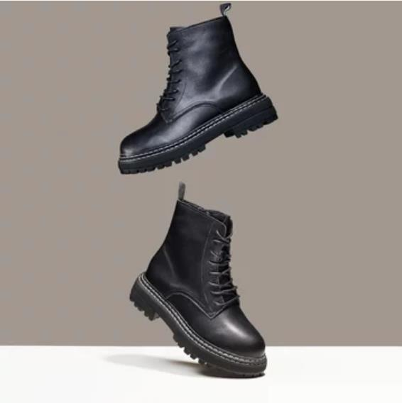
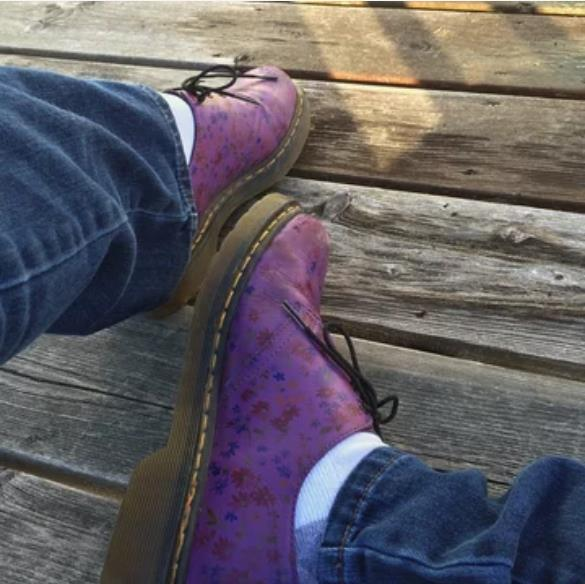

Home
Grifo del fregadero
Grifo de filtro
Grifos Altos
zapato
zapato

¿Acaba de visitar el mercado y está confundido por tantas opciones de Zapatos De Seguridad Para Hombre? Está buscando una guía perfecta que pueda ayudarlo a encontrar el mejor ¿ Zapatos De Seguridad Para Hombre del mercado? Si es así, prepárate para sumergirte en la maravilla de posibilidades ilimitadas con nosotros. Aquí le proporcionaremos una guía detallada que hará que su viaje de compras sea aún más genial. Ya no tienes que confundirte, ya que los consejos que te damos aquí harán que tu viaje sea interesante y más fácil.

Ligero y Cómodo --- Los zapato seguridad hombre están hechos de gamuza transpirable, asegura su ligereza y moda, deja que tu pie se sienta más suave y transpirable, la comodidad del producto, te permite no sentirte pesado después del trabajo de fatiga. Resistente al Desgaste y Antideslizante --- Nuestras suelas de goma son ultra resistentes al desgaste, antideslizantes, resistentes, a prueba de golpes.Las suelas de las líneas especiales tienen un agarre fuerte, un rendimiento antideslizante superior.La suela de goma está diseñada para Reducción de impactos y resistencia al deslizamiento y al calor.